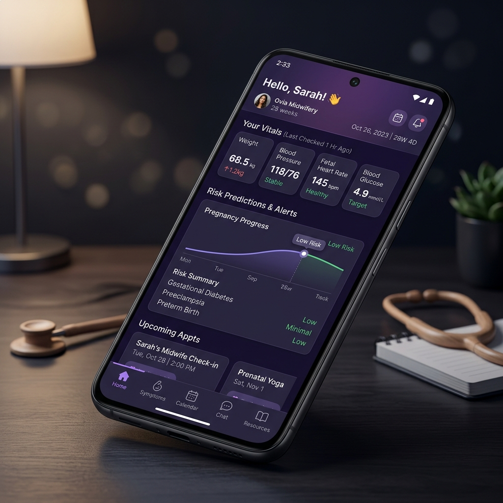
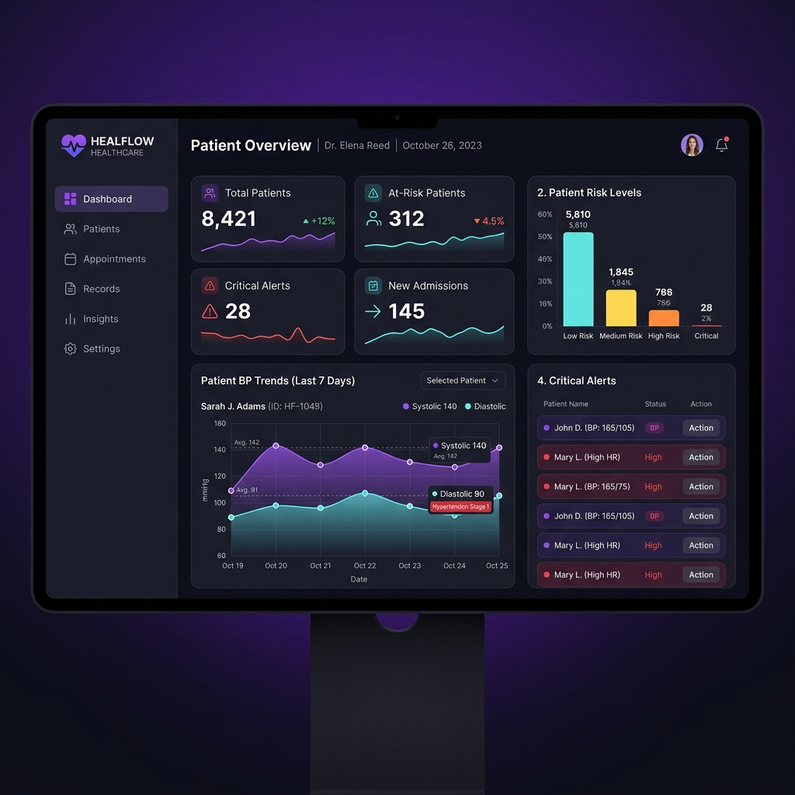
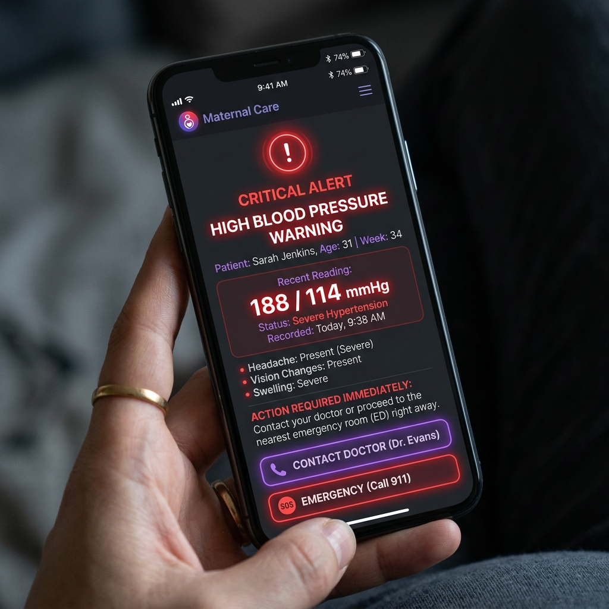

A machine learning–powered mobile application that delivers real-time maternal risk prediction, interactive dashboards, and multimodal alerts — purpose-built for midwives on the front lines of antenatal care.

Despite Sri Lanka's achievements in maternal health, preventable complications persist — especially in rural and semi-urban settings where specialist access is limited and decisions must be made fast, often with paper records alone.
Key Gaps Identified
A Flutter-based cross-platform mobile app that puts a clinical intelligence assistant in every midwife's pocket.
A look inside the application's core modules — from real-time dashboards to the alert pipeline and architecture.

